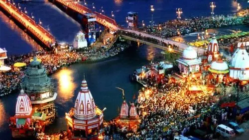
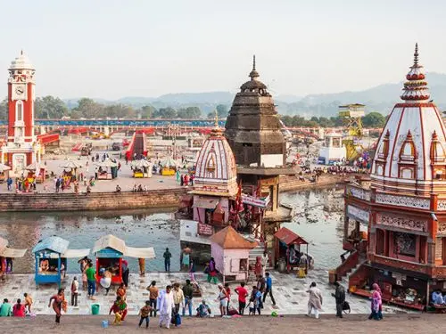
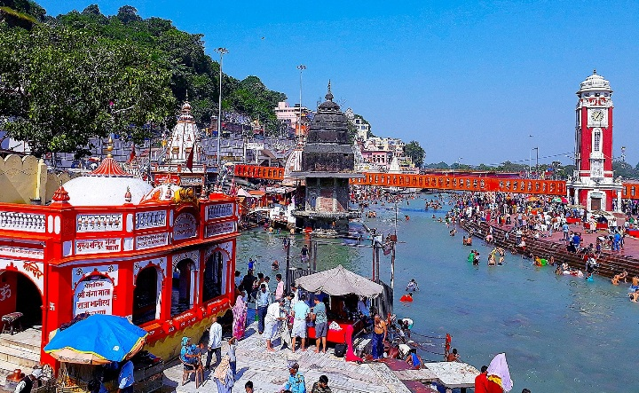
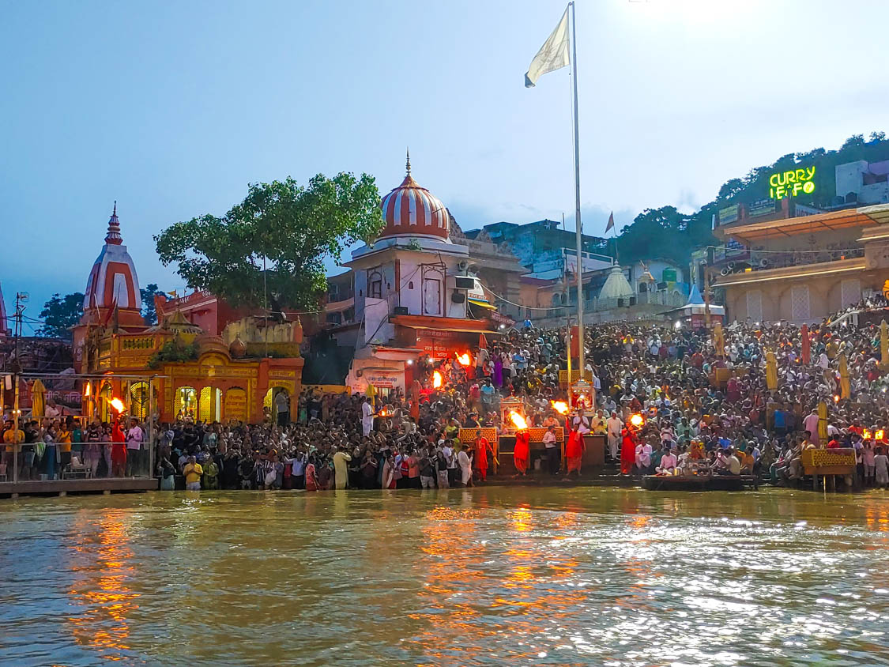
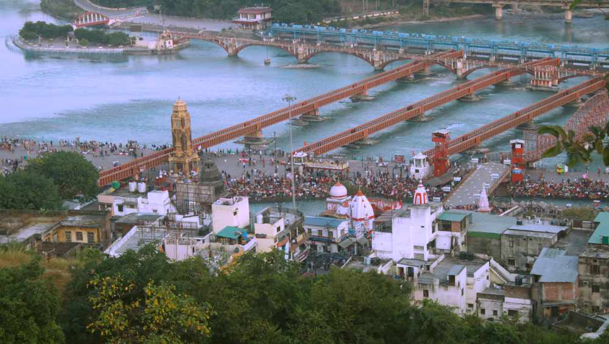
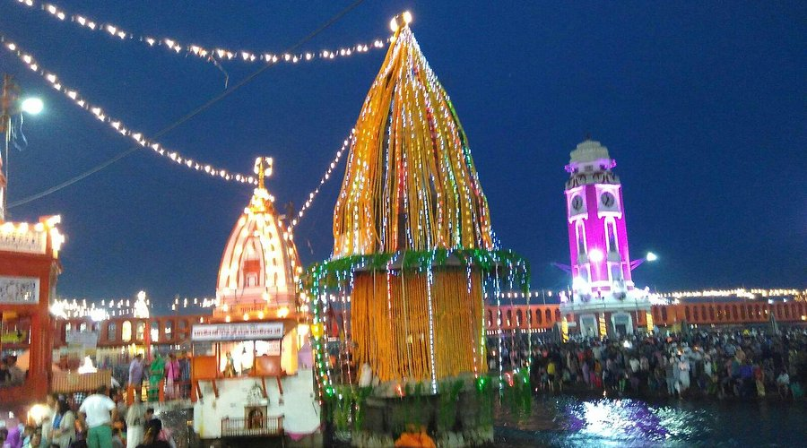

Har Ki Pauri (meaning "Footsteps of Lord Vishnu" or "Hari's Steps") is the most revered and iconic ghat on the banks of the holy Ganges River in Haridwar, Uttarakhand — one of India's seven holiest cities and the "Gateway to the Gods." This sacred site is believed to mark the precise spot where the Ganges descends from the mountains into the plains, and where Lord Vishnu's footprint (imprint) is said to remain in the Brahmakund. Built by King Vikramaditya in ancient times and steeped in Vedic legends, Har Ki Pauri holds immense spiritual significance: a holy dip here is thought to cleanse sins, grant moksha, and bring divine blessings. It serves as the epicenter for the grand Ganga Aarti every evening — a mesmerizing ritual of synchronized fire lamps, ringing bells, conch shells, Vedic chants, and floating diyas that illuminate the river like a sea of stars, drawing lakhs of devotees and tourists in a collective wave of devotion and peace.
As the heart of Haridwar's spiritual life, Har Ki Pauri pulses with energy during major festivals like Kumbh Mela (every 12 years), Ardh Kumbh (every 6 years), and Vaisakhi. The ghat's steps lead directly into the flowing Ganga, surrounded by temples, ashrams, and bustling markets, creating an atmosphere of timeless faith, purification, and communal harmony. Whether witnessing the sunrise Mangala Aarti, taking a sacred bath, or surrendering to the evening spectacle, Har Ki Pauri offers a profound experience where the river's eternal flow mirrors the soul's journey — washing away worries and igniting inner light in the presence of Maa Ganga's divine grace.
October to March for pleasant, cool weather and comfortable exploration; peak spiritual energy during festivals like Kumbh Mela or evenings for Ganga Aarti. Arrive late afternoon (arrive 1 hour early) for the best spots at evening Aarti. Morning Mangala Aarti (~5:30–6:30 AM) offers a serene experience. Avoid heavy monsoon (July–September) due to high water levels and crowds; summer (April–June) can be hot but vibrant.
Iconic evening Ganga Aarti with fire lamps & chants, holy dip in the Ganges at Brahmakund, Vishnu footprint imprint, nearby temples & ashrams, floating diyas on the river, Mangala (morning) Aarti, bustling nearby markets for spiritual shopping — perfect for pilgrimage, photography of the illuminated river, meditation by the ghats, and feeling the collective devotion of thousands under the Himalayan foothills.
Arrive 45–60 minutes early for Ganga Aarti to secure a good viewing spot (or book VIP seating/boat if available), wear modest clothing and remove shoes near the ghat, take a holy dip if possible (carry dry clothes/change), maintain silence during rituals, avoid littering in the sacred river, carry water/snacks (markets nearby), be cautious of crowds/pickpockets during peak times, and combine with nearby attractions like Mansa Devi or Chandi Devi temples for a fuller Haridwar experience.
"At Har Ki Pauri, where Vishnu's footsteps meet the descending Ganga, the river doesn't just flow — she sings. In the glow of a thousand lamps and the echo of ancient chants, every soul finds its reflection purified, every heart touched by the eternal grace that carries the divine from mountains to mankind."